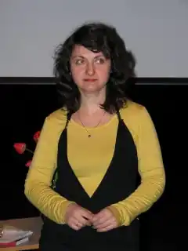
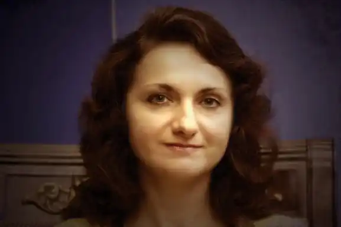

Надія Леонідівна Мірошниченко (Неда Неждана) народилася 8 червня 1971 року в Краматорську Донецької області. Закінчила Київську художню школу, Київський лінгвістичний університет (французька філологія, диплом із відзнакою) та Києво-Могилянську академію (культурологія). Навчалася і працювала у Центрі Сучасної експериментальної драматургії А. Дяченка.
Працювала журналісткою в агентстві УНІАН, заввіділом театру журналу "Кіно-Театр", друкувалася в періодиці ("Дзеркало тижня", "Урядовий кур'єр", "ПІК", "Літературна Україна", "Хрещатик" тощо), завлітом Київського обласного театру ім. П. Саксаганського, сценаристкою радіосеріалу "Життя відстанню в 10 хвилин" (Освітній Центр Реформ), сценарною редакторкою серіалу "Любов — це…" (Західно-Європейський Інститут). Була одним із засновників театрального інтернетсайту "Віртеп", зокрема упорядницею драматургічної бібліотеки.
Із 2001 року — наукова співробітниця Центру театрального мистецтва імені Леся Курбаса, кураторка драматургічних проєктів, захистила кандидатську дисертацію "Структуротвірна роль міфу у сучасній українській драмі" (теорія літератури). Брала участь в науково-практичних конференціях та семінарах. Має понад 20 наукових публікацій і понад 70 аналітичних в журналах, газетах і книгах України та за її межами (Польща, Франція, Німеччина, Велика Британія). Одна із співзасновників незалежного театру і Київської театр-студії МІСТ. Викладала теорію і практику драматургії на кафедрі теорії літератури, компаративістики і літературної творчості в КНУ імені Т.Шевченка, КДУ імені Б.Грінченка, НАКККІМ. Із 2013 — голова українського комітету мережі Євродрами Дому Європи і Сходу в Парижі (Франція). Твори перекладалися російською, польською, англійською, французькою, вірменською, грузинською, болгарською, македонською, естонською, сербською, португальською, німецькою, турецькою, курдською мовами.